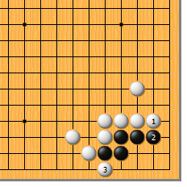
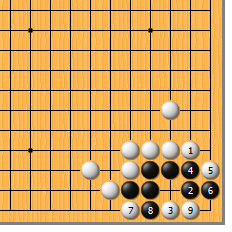
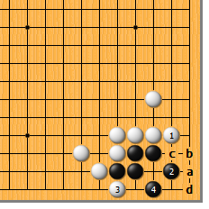
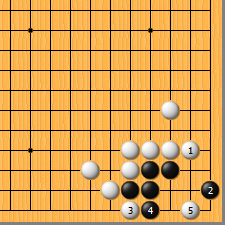
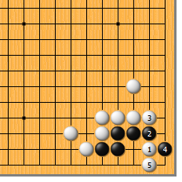
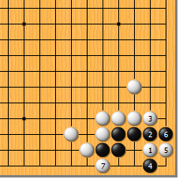
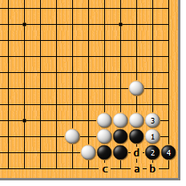

|  |  | |
| 图1 不必想得太复杂，白1立即可。黑2如挡，白3一扳黑就不行了。
| 图2 白1时，黑2如尖，要小心应对。白3急所点，黑4如团，白5、7两扳，至白9爬，黑死。黑4如于9位挡，白6位托。 | |
|  |  | |
| 图3 白1、黑2时，白3如扳，随手。黑4做眼，白a、黑b、白c、黑d，白破不了眼，黑是净活。
| 图4 白1时，黑2飞，是狡猾的一手。白3扳好，黑4如挡，白5点，黑必死无疑。白3直接于5位点也行。 | |
|  |  | |
图5 还有一种杀法，就是白1的点。让黑2挡，白3再夹，黑4扳则白5立，黑死。这也是正解。
| 图6 有一点要当心，就是黑4的夹。白5必须立，和黑6交换一手，再于7位扳，如此黑净死。白5如于6位渡，黑可于5位扑，生出劫来。 | |
|  | 您的高见 | |
图7 再来看看失败的例子。白如1、3扳粘，黑4立则活。以后白a则黑b，白c、黑d，白接不归。想必各位都算到了吧。 |